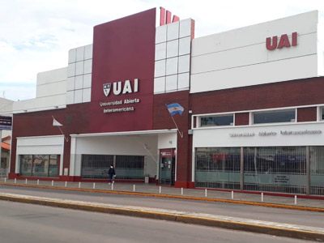

Santa Fe Más: la provincia firmó un convenio de asistencia técnica con la Universidad Abierta Interamericana
La casa de altos estudios brindará capacitaciones a través de su sede en la ciudad de Rosario.
INFORMACION GENERAL
El Ministerio de Desarrollo Social, a través del programa Santa Fe Más – Aprender Haciendo, rubricó un convenio de colaboración con la Universidad Abierta Interamericana (UAI) que permitirá que alumnos y docentes de distintas carreras formen a jóvenes de entre 16 y 30 años que participan del programa provincial. Al respecto, el ministro de Desarrollo Social, Danilo Capitani, expresó que “queremos que los jóvenes que aprenden un oficio puedan consolidarlo con un trabajo, con una actividad productiva o una prestación de servicios en el corto plazo. Por ello, estas nuevas capacitaciones permitirán ampliar la visión de los mercados laborales con herramientas específicas de cada sector”. Por su parte, el secretario de Políticas de Inclusión y Desarrollo Territorial, Fernando Mazziotta, afirmó que “es esencial que el Estado acompañe a los jóvenes en el desarrollo de su preparación y brinde herramientas y oportunidades concretas para incorporarse al mercado laboral formal, para que de esa manera puedan elegir y concretar sus proyectos de vida”. Por último, el director provincial de Desarrollo Territorial, Camilo Scaglia, manifestó que “lo que se busca con el programa es promover la inclusión socioeconómica y el desarrollo productivo regional abordando, desde una lógica distinta, a cada una de las problemáticas sociales”.
EL CONVENIO
El acuerdo firmado permitirá la conformación de equipos interdisciplinarios para actuar directamente en el territorio para fortalecer y profesionalizar el trabajo que realizan las organizaciones, mediante actividades de intervención específicas según las necesidades detectadas. Participarán alumnos avanzados y docentes de la UAI con sede en Rosario, de las carreras de Contador Público, Abogacía, Administración, Relaciones Públicas, Publicidad, Nutrición, Medicina, Enfermería, Psicología y Terapia Ocupacional. Los objetivos prioritarios son el desarrollo de estrategias comerciales y de gestión, la sistematización de procesos, el diseño de indicadores económicos-financieros, las vías de financiamiento y canalización de fondos, la asistencia en el encuadre societario, laboral, fiscal y contable de cada una de las ONG. También se trabajarán las relaciones laborales, el marco jurídico de los contratos, la gestión de la documentación de créditos y deudas, la promoción y educación de la salud, la identificación de factores de riesgo ambiental, y el monitoreo de buenas prácticas.
SANTA FE MAS
Esta iniciativa provincial está dirigida a jóvenes que se encuentran fuera del mercado laboral o que abandonaron la escuela, a quienes se les brindan diferentes talleres de formación en algún oficio de interés con el fin de promover su inclusión socioeconómica y educativa. La provincia lleva invertidos más de 2.500 millones de pesos en este tipo de iniciativas y políticas socio-productivas. Estos programas se instrumentan en los 19 departamentos del territorio santafesino; en acciones con una modalidad inclusiva, participativa y convocante. Se dictan 1.700 talleres de capacitación para la inclusión de más de 26.000 jóvenes de entre 16 y 30 años.